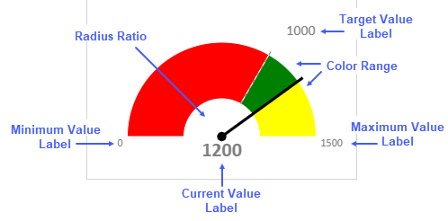
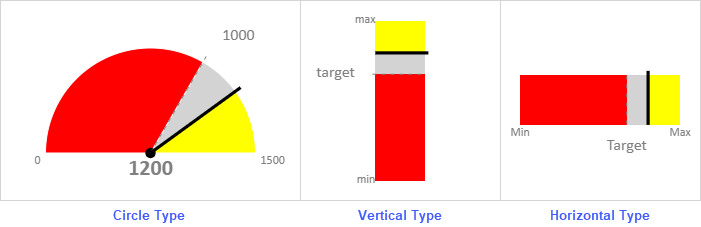

SpreadJS provides Gauge KPI sparkline which can be used to visualize the performance of metrics with respect to KPI values. It can be used to indicate the effectiveness of management work or present sales targets etc.

Gauge KPI sparkline uses the following values to display metrics:
SpreadJS provides three types of Gauge KPI sparklines, namely, Circle, Vertical, and Horizontal which can be set by using the gaugeType option in the GaugeKPISparkline function.

Gauge KPI sparkline formula has the following options:
| Argument | Type | Description |
|---|---|---|
|
targetValue
Required |
Number | The target value of the gauge KPI sparkline. The target value is between minValue and maxValue. |
|
currentValue
Required |
Number | The current value of the gauge KPI sparkline. The current value is between minValue and maxValue. |
|
minValue
Required |
Number | The minimum value of the gauge KPI sparkline. The minValue is less than maxValue. |
|
maxValue
Required |
Number | The maximum value of the gauge KPI sparkline. The maxValue is more than minValue. |
|
showLabel
Optional |
Boolean |
Specifies whether to show the label of all the values provided in the sparkline.
If false, it will not show labels. If true, it will only show the labels which fit inside the cell width and height. The cell should have enough width and height to show both graph and labels. The default value is true. |
|
targetValueLabel
Optional |
String |
The string to display as target value label.
The default value is targetValue. |
|
currentValueLabel
Optional |
String |
The string to display as current value label.
The default value is currentValue. |
|
mintValueLabel
Optional |
String |
The string to display as minimum value label.
The default value is minValue. |
|
maxValueLabel
Optional |
String |
The string to display as maximum value label.
The default value is maxValue. |
|
fontArray
Optional |
CalcArray |
Array contains font format as string items for the four label types -
showLabel option must be true. |
|
minAngle
Optional |
Number |
The minimum angle value of circle type. The minAnigle should be less than maxAngle.
The angle values correspond to the time in the clock. 0 is 12 o'clock, -90 is 9 o'clock, 90 is 3 o'clock, and -180/180 is 6 o'clock. The default value is -90. gaugeType option must be 0 (circle type). |
|
maxAngle
Optional |
Number |
The maximum angle value of circle type. The maxAngle should be bigger than minAngle.
The angle values correspond to the time in the clock. 0 is 12 o'clock, -90 is 9 o'clock, 90 is 3 o'clock, and -180/180 is 6 o'clock. The default value is 90. gaugeType option must be 0 (circle type). |
|
radiusRatio
Optional |
Number |
The value is calculated as the ratio of inner circle radius and outer circle radius. The outer circle radius value is decided by the cell size.
The value ranges between 0 and 1. Default is 0. gaugeType option must be 0 (circle type). |
|
gaugeType
Optional |
Number |
The KPI sparkline type.
0 - Circle The default type is circle. |
|
colorRange
Optional Repeatable |
CalcArray |
The color range between specified values.
{startValue, endValue, color_string} Where startValue is the starting value in a range, endValue is the ending value in a range, and the color_string is the color of the range between the two specified value. The startValue must be less than the endValue and both the values should be between minValue and maxValue. Default color range from minValue to maxValue is filled with light gray color. |
The Gauge KPI sparkline formula has the following syntax:
=GAUGEKPISPARKLINE (targetValue, currentValue, minValue, maxValue,showLabel?,targetValueLabel?,currentValueLabel?,minValueLabel?,maxValueLabel?, fontArray?, minAngle?, maxAngle?, radiusRatio?, gaugeType?, colorRange?)
Gauge KPI sparklines are used to monitor the annual sales performance of a company. The Revenue, Profit and Sales metrics are measured against their target and actual values which helps to visualize the data easily and make meaningful deductions.
Gauge KPI sparkline in sales performance monitoring
| JavaScript |
Copy Code
|
|---|---|
// initializing Spread var spread = new GC.Spread.Sheets.Workbook(document.getElementById('ss'), { sheetCount: 2 }); // get the sheets var sheet1 = spread.sheets[0]; var sheet2 = spread.sheets[1]; // Hide gridlines sheet1.options.gridline = { showVerticalGridline: false, showHorizontalGridline: false }; // Hide row/ col headers sheet1.options.colHeaderVisible = false; sheet1.options.rowHeaderVisible = false; // set column width for (var i = 0; i < 3; i++) sheet1.setColumnWidth(i, 340); for (var i = 0; i < 4; i++) sheet2.setColumnWidth(i, 70); for (var i = 0; i < 5; i++) sheet2.setColumnWidth(i, 170); // set row height sheet1.setRowHeight(0, 35, GC.Spread.Sheets.SheetArea.dataArea); sheet1.setRowHeight(1, 280, GC.Spread.Sheets.SheetArea.dataArea); // set data sheet1.setValue(0, 0, "Sales($'000) Dashboard FY 2019-20", GC.Spread.Sheets.SheetArea.dataArea); var dataArray1 = [ ["Parameters", "Target", "Current", "Min", "Max"], ["Revenue", 900, 1200, 0, 2000], ["Profit", 1200, 1100, 0, 2000], ["Sales", 1600, 1800, 0, 2000] ]; sheet2.setArray(0, 0, dataArray1); // set GaugeKPISparkline formula sheet1.setFormula(1, 0, '=GAUGEKPISPARKLINE(Sheet2!B2,Sheet2!C2,Sheet2!D2,Sheet2!E2,TRUE,TEXT(Sheet2!B3/1000,"$0.0K"),Sheet2!A2,TEXT(Sheet2!D2/1000,"$0.0K"),TEXT(Sheet2!E2/1000,"$0.0K"),{"normal normal 11pt Calibri","normal bold 16pt Calibri","normal normal 9pt Calibri","normal normal 9pt Calibri"},-90,90,0.4,0,{0,1200,"#FFB2BD"},{1200,1500,"#FFDFB0"},{1500,2000,"#BCEAB4"})'); sheet1.setFormula(1, 1, '=GAUGEKPISPARKLINE(Sheet2!B3,Sheet2!C3,Sheet2!D3,Sheet2!E3,TRUE,TEXT(Sheet2!B3/1000,"$0.0K"),Sheet2!A3,TEXT(Sheet2!D3/1000,"$0.0K"),TEXT(Sheet2!E3/1000,"$0.0K"),{"normal normal 11pt Calibri","normal bold 16pt Calibri","normal normal 9pt Calibri","normal normal 9pt Calibri"},-90,90,0.4,0,{0,1200,"#FFB2BD"},{1200,1500,"#FFDFB0"},{1500,2000,"#BCEAB4"})'); sheet1.setFormula(1, 2, '=GAUGEKPISPARKLINE(Sheet2!B4,Sheet2!C4,Sheet2!D4,Sheet2!E4,TRUE,TEXT(Sheet2!B4/1000,"$0.0K"),Sheet2!A4,TEXT(Sheet2!D4/1000,"$0.0K"),TEXT(Sheet2!E4/1000,"$0.0K"),{"normal normal 11pt Calibri","normal bold 16pt Calibri","normal normal 9pt Calibri","normal normal 9pt Calibri"},-90,90,0.6,0,{0,1200,"#FFB2BD"},{1200,1500,"#FFDFB0"},{1500,2000,"#BCEAB4"})'); sheet1.addSpan(0, 0, 1, 3, GC.Spread.Sheets.SheetArea.dataArea); // set style for Row 0 style1 = new GC.Spread.Sheets.Style(); style1.font = "bold 28px Calibri"; style1.foreColor = "white"; style1.backColor = "#14928F"; style1.hAlign = GC.Spread.Sheets.HorizontalAlign.center; sheet1.setStyle(0, 0, style1, GC.Spread.Sheets.SheetArea.dataArea); // set style for Row 1 var style = new GC.Spread.Sheets.Style(); style.backColor = "#B4E7E2"; for (var i = 0; i < 3; i++) { sheet1.setStyle(1, i, style, GC.Spread.Sheets.SheetArea.dataArea); } |
|